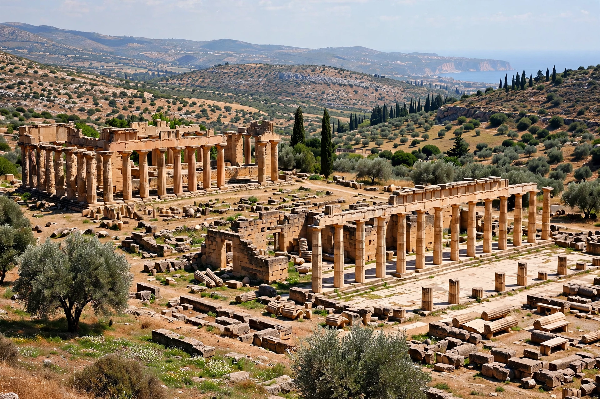

Cyrene was an ancient Greek and later Roman city near present-day Shahhat, Libya. It was the oldest and most important of the five Greek cities in the region (the Pentapolis) and gave eastern Libya its classical name, Cyrenaica, which it retained into modern times.

| Founded | c. 630 BC |
|---|---|
| Region | Cyrenaica, Libya |
| UNESCO | World Heritage Site (1982) |
Founded by colonists from Thera (Santorini) led by Battus, Cyrene prospered from trade in grain, horses and the medicinal plant silphium, depicted on its coins. It was a centre of learning — home to the philosopher Aristippus, founder of the Cyrenaic school, the poet Callimachus, and the geographer Eratosthenes (born in Cyrene).
It passed to Ptolemaic Egypt, then to Rome in 96 BC. It declined after earthquakes (notably AD 365) and Arab conquest in the 7th century.
Extensive ruins include the Sanctuary of Apollo, Temple of Zeus, agora, theatre, and a large necropolis. Cyrene is a UNESCO World Heritage Site.